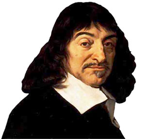

| F I L Ó S O F O S I N V O L U C R A D O S |
|---|
| P l a t ó n |
|---|
Fue un filósofo griego. Junto con su maestro Sócrates y su discípulo Aristóteles, Platón es la figura central de los tres grandes pensadores en que se asienta toda la tradición filosófica europea. |
Una característica del estilo platónico que revela una admirable conjunción entre pensamiento y expresión es su empleo del mito para hacer más evidente el pensamiento filosófico. Sin duda el más célebre de ellos es el mito de la caverna utilizado en La República; pero también son conocidos el del juicio de ultratumba, que aparece en Gorgias, y el de Epimeteo, en Protágoras. |
Sin embargo, las ideas de Platón siguieron influyendo (por sí mismas o a través de su discípulo Aristóteles) sobre toda la historia posterior del mundo occidental: su concepción dualista del mundo y del ser humano (materia-espíritu, cuerpo-alma), la superioridad del conocimiento racional sobre el sensible o la división de la sociedad en tres órdenes funcionales serían ideas recurrentes del pensamiento europeo durante siglos. |
| A r i s t ó t e l e s |
Aristóteles (en griego antiguo: Ἀριστοτέλης Aristotélēs; Estagira, 384 a. C.-Calcis, 322 a. C.) fue un filósofo, polímata y científico nacido en la ciudad de Estagira, al norte de Antigua Grecia. Es considerado junto a Platón, el padre de la filosofía occidental. Sus ideas han ejercido una enorme influencia sobre la historia intelectual de Occidente por más de dos milenios. Fue discípulo de Platón y de otros pensadores, como Eudoxo de Cnido, durante los veinte años que estuvo en la Academia de Atenas. Fue maestro de Alejandro Magno en el Reino de Macedonia durante casi 5 años. En la última etapa de su vida fundó el Liceo en Atenas, donde enseñó hasta un año antes de su muerte. Aristóteles escribió cerca de 200 obras (de los cuales solo se han conservado 31, ninguna de ellas destinada a la publicación) sobre una enorme variedad de temas, entre ellos: lógica, metafísica, filosofía de la ciencia, ética, filosofía política, estética, retórica, física, astronomía y biología. Aristóteles transformó muchas, si no todas, las áreas del conocimiento que abordó. Es reconocido como el padre fundador de la lógica y de la biología, pues si bien existen reflexiones y escritos previos sobre ambas materias, es en el trabajo de Aristóteles, donde se encuentran las primeras investigaciones sistemáticas al respecto. Para Aristóteles, a diferencia de su maestro, solo hay un único mundo en donde cada ser está compuesto de materia y forma (hilemorfismo), siendo es última su esencia. Según el filósofo, todo ser tiende a un fin. El ser humano es un "animal político racional" constituido por cuerpo (materia) y alma (forma) que desea saber y ser feliz. La experiencia es la fuente del conocimiento y la felicidad proviene de la virtud propia del alma, que es razonar. El gobierno es una comunidad de individuos que debe preservar la felicidad de sus ciudadanos. También defendió el valor del arte y la retórica como medio para la verdad, y la superioridad del varón griego. Entre muchas otras contribuciones, Aristóteles formuló la teoría de la generación espontánea, el principio de no contradicción, las nociones de categoría, sustancia, acto, potencia y primer motor inmóvil. Algunas de sus ideas, que fueron novedosas para la filosofía de su tiempo, hoy forman parte del sentido común de muchas personas. Influyó en el pensamiento islámico durante la Edad Media, así como en la escolástica cristiana. Su ética, aunque siempre influyente, ganó un renovado interés con el advenimiento moderno de la ética de la virtud. |
| René Descartes |
| Durante la Edad Moderna era también conocido por su nombre latino Renatus Cartesius. Descartes nació el 31 de marzo de 1596 en la Turena, en La Haye en Touraine, hoy en día llamada Descartes en su honor, después de que su madre abandonara la ciudad de Rennes, donde se había declarado una epidemia de peste bubónica. Pertenecía a una familia de baja nobleza; su padre fue Joachim Descartes, consejero en el Parlamento de Bretaña. Era el tercero de los descendientes del matrimonio entre Joachim Descartes, parlamentario de Rennes, y Jeanne Brochard, por lo que, por vía materna, era nieto del alcalde de Nantes. | Durante su infancia y adolescencia |
| Después de la temprana desaparición de su madre, Jeanne Brochard, a pocos meses después de su nacimiento, quedó al cuidado y crianza de su abuela, su padre y su nodriza. Fue criado por la atención de una nodriza, a quien permanecerá ligado toda su vida, en casa de su abuela materna. Su madre muere el 13 de mayo de 1597, a los trece meses siguientes de haber alumbrado a René y pocos días, luego del nacimiento de un niño que no sobrevive. Su padre comenzó a llamarle su «pequeño filósofo» porque el pequeño René se pasaba el día planteando preguntas. Con once años entra en el Collège Henri IV de La Flèche, un centro de enseñanza jesuita en el que impartía clase el padre François Fournet —doctor en filosofía por la Universidad de Douai15— y el padre Jean François (matemático) —que le enseñará matemáticas durante un año— en el que permanecerá hasta 1614. Estaba eximido de acudir a clase por la mañana debido a su débil salud y era muy valorado por los educadores a causa de sus precoces dotes intelectuales. Aprendió física y filosofía escolástica, y mostró un notable interés por las matemáticas; no obstante, no cesará de repetir en su Discurso del método que en su opinión este sistema educativo no era bueno para un adecuado desarrollo de la razón. De este periodo no conservamos más que una carta de dudosa autenticidad —puede ser de uno de sus hermanos— que en teoría Descartes escribió a su abuela. La educación que recibió en La Flèche hasta los dieciséis años de edad (1604-1612) le proporcionó, durante los cinco primeros años de cursos, una sólida introducción a la cultura clásica, habiendo aprendido latín y griego en la lectura de autores como Cicerón, Horacio y Virgilio, por un lado, y Homero, Píndaro y Platón, por el otro. El resto de la enseñanza estaba basada principalmente en textos filosóficos de Aristóteles (Órganon, Metafísica, Ética a Nicómaco), acompañados por comentarios de jesuitas (Suárez, Fonseca, Toledo, quizá Vitoria) y otros autores españoles (Cayetano). Conviene destacar que Aristóteles era entonces el autor de referencia para el estudio, tanto de la física, como de la biología. El plan de estudios incluía también una introducción a las matemáticas (Clavius), tanto puras como aplicadas: astronomía, música, arquitectura. Siguiendo una extendida práctica medieval y clásica, en esta escuela los estudiantes se ejercitaban constantemente en la discusión (Cfr. Gaukroger, quien toma en cuenta la Ratio studiorum: el plan de estudios que aplicaban las instituciones jesuíticas). A los 18 años de edad, Descartes ingresó en la Universidad de Poitiers para estudiar derecho y medicina. Para 1616 cuenta con los grados de bachiller y licenciado en Derecho. A los veintidós años parte hacia los Países Bajos, donde observa los preparativos del ejército de Mauricio de Nassau para la inminente Guerra de los Treinta Años. En 1618 y 1619 reside en Holanda. Allí conocerá a un joven científico, Isaac Beeckman, con quien durante varios años mantiene una intensa y estrecha amistad. Para él escribe pequeños trabajos de física, como «Sobre la presión del agua en un vaso» y «Sobre la caída de una piedra en el vacío», así como un compendio de música. En 1619 se enrola en las filas del duque Maximiliano de Baviera. El filósofo se encontraba acuartelado en Ulm, cerca de Baviera, durante el frío invierno de 1619. Pasa el día en una habitación calentada por una estufa, al dormirse por la noche tres sueños sucesivos que interpreta como un mensaje del Cielo para consagrarse a su misión de investigador. | Los tres sueños |
| En el primer sueño es atormentado por unos fantasmas que lo asustaron tanto que le hicieron salir a la calle. Al caminar iba encorvado hacia el lado izquierdo, porque sentía una gran debilidad en su lado derecho. Cuando intentaba rectificar su paso, fue sacudido por un torbellino. Vio una iglesia y fue hacia ella, con la idea de rezar, pero un hombre se acercó a él diciéndole que Monsieur N tenía algo que darle. Era un melón de un país extranjero. La intensidad del viento disminuyó y se despertó pensando que tal vez un genio maligno lo quería seducir. Al despertarse, Descartes rezó y le pidió a Dios que lo protegiera y volvió a dormirse. El segundo sueño un sonido explosivo, como un relámpago, lo estremeció. Esto hizo que se "despertara". Abrió los ojos y notó numerosas centellas de fuego dispersas por toda su habitación. El terror se disipó y se volvió a dormir. El tercer sueño, Descartes encontró una un diccionario y una antología de poesía latina, Corpus Poetarum. Lo abrió en un verso que decía "Quod vitae sectabor iter?" ("¿Qué camino de vida debo seguir?"). Luego un hombre desconocido le mostró un verso que empezaba "Est & Non" ("Sí o No"). Era un idyllis de Ausonio. Se lo intentó enseñar al hombre pero no lo encontró. Le dijo al hombre que conocía otro poema, del mismo poeta, que empezaba "Quod vitae sectabor iter?". Sin lograrlo, finalmente el libro y el hombre desaparecieron. Se dice que Descartes no despertó, sino que empezó a interpretar su sueño mientras soñaba. Descartes consideró que "el Diccionario significaba nada menos que todas las ciencias juntas" y que los poemas indicaban "la Filosofía y la Sabiduría unidas" y por último, que la frase "Quod vitae sectabor iter" "era un buen consejo de una persona sabia, o incluso Teología Moral". El "Sí y No", que era de Pitágoras, debía entenderse como la verdad y la falsedad en el conocimiento humano y en las ciencias seculares. De esa época posiblemente data su concepción de una matemática universal y su invento de la geometría analítica. Renuncia a la vida militar en 1619. Abandona Holanda, vive una temporada en Dinamarca y luego en Alemania, asistiendo a la coronación del emperador Fernando en Fráncfort. Viaja por Alemania y regresa a Francia en 1622, estancia que aprovecha para vender sus posesiones y así asegurarse una vida independiente. Pasa una temporada en Italia (1623-1625), donde sigue de cerca el itinerario que décadas antes había hecho Michel de Montaigne. |
| En noviembre de 1618 conoció en Breda a Isaac Beeckman, quien intentaba desarrollar una teoría física corpuscularista, muy basada en conceptos matemáticos. El contacto con Beeckman estimuló en gran medida el interés de Descartes por la matemática y la física. Pese a los constantes viajes que realizó en esta época, Descartes no dejó de formarse y en 1620 conoció en Ulm al entonces famoso maestro calculista alemán Johann Faulhaber. Él mismo refiere que, inspirado por una serie de sueños, en esta época vislumbró la posibilidad de desarrollar una «ciencia maravillosa». El hecho es que, probablemente estimulado por estos contactos, Descartes descubre el teorema denominado de Euler sobre los poliedros. Descartes en la Corte de la reina Cristina de Suecia (detalle), Louis-Michel Dumesnil, Palacio de Versalles A pesar de discurrir sobre los temas anteriores, Descartes no publicó entonces ninguno de estos resultados. Durante su estancia más larga en París, Descartes reafirma relaciones que había establecido a partir de 1622 con otros intelectuales, como Marin Mersenne y Guez de Balzac, así como con un círculo conocido como «Los libertinos». En esta época sus amigos propagan su reputación, hasta el punto de que su casa se convirtió entonces en un punto de reunión para quienes gustaban intercambiar ideas y discutir. Con todo ello su vida parece haber sido algo agitada, pues en 1628 se bate en duelo, tras el cual comentó que «no he hallado una mujer cuya belleza pueda compararse a la de la verdad». El año siguiente, con la intención de dedicarse por completo al estudio, se traslada definitivamente a los Países Bajos, donde llevaría una vida modesta y tranquila, aunque cambiando de residencia constantemente para mantener oculto su paradero. Descartes permanece allí hasta 1649, viajando, sin embargo, en una ocasión a Dinamarca y en tres a Francia. La preferencia de Descartes por Holanda parece haber sido bastante acertada, pues mientras en Francia muchas cosas podrían distraerlo y había escasa tolerancia, las ciudades holandesas estaban en paz, florecían gracias al comercio y grupos de burgueses potenciaban las ciencias fundándose la academia de Ámsterdam en 1632. Entre tanto, el centro de Europa se desgarraba en la Guerra de los Treinta Años, que terminaría en 1648. | Fallecimiento |
| En septiembre de 1649, la reina Cristina de Suecia llamó a Descartes a Estocolmo. Allí murió de una neumonía el 11 de febrero de 1650, a los 53 años de edad. Actualmente se pone en duda si la causa de su muerte fue la neumonía. En 1980, el historiador y médico alemán Eike Pies halló en la Universidad de Leiden una carta secreta del médico de la corte que atendió a Descartes, el holandés Johan Van Wullen, en la que describía al detalle su agonía. Curiosamente, los síntomas presentados —náuseas, vómitos, escalofríos— no eran propios de una neumonía. Tras consultar a varios patólogos, Pies concluyó en su libro El homicidio de Descartes, documentos, indicios, pruebas, que la muerte se debía a envenenamiento por arsénico. La carta secreta fue enviada a un antepasado del escritor, el holandés Willem Pies. En el año de 1676 se exhumaron los restos de Descartes; colocados en un ataúd de cobre se trasladaron a París para ser sepultados en la iglesia de Sainte-Geneviève-du-Mont. Movidos nuevamente durante el transcurso de la Revolución francesa, los restos fueron colocados en el Panthéon, la basílica dedicada a los grandes hombres de la nación francesa. Nuevamente, en 1819, los restos de René Descartes cambiaron de sitio de reposo y fueron llevados esta vez a la Abadía de Saint-Germain-des-Prés, donde se encuentran en la actualidad, a excepción de su cráneo que se conserva en el Museo del Hombre en París. En 1935 se llamó, en su honor, «Descartes» a un cráter lunar. Su ciudad natal también fue bautizada como "Descartes". |
 |